#1 cichorium_intybus ↔ taraxacum_typ M · moderate

cichorium_intybuscichorium_intybus
38 µm → 95px

taraxacum_typtaraxacum_typ
28 µm → 70px
scale via
taraxacum_officinaleScale: width_px = round(largest_µm × 2.5) from the image folder taxon. Brassica type uses brassica_napus.
Applied classes from chat. Unrated: #9, #22, #24 (still confirmed, no difficulty yet).
cichorium_intybus ↔ taraxacum_typ M · moderate
cichorium_intybus
taraxacum_typtaraxacum_officinalecrepis_biennis ↔ taraxacum_typ D · difficult
crepis_biennis
taraxacum_typtaraxacum_officinalehieracium_aurantiacum ↔ taraxacum_typ D · difficult
hieracium_aurantiacum
taraxacum_typtaraxacum_officinalehieracium_typ ↔ taraxacum_typ M · moderate
hieracium_typhieracium_aurantiacum
taraxacum_typtaraxacum_officinalesonchus_arvensis ↔ taraxacum_typ E · easy
sonchus_arvensis
taraxacum_typtaraxacum_officinaletaraxacum_typ ↔ tragopogon_typ E · easy
taraxacum_typtaraxacum_officinale
tragopogon_typtragopogon_pratensisbrassica_typ ↔ fraxinus_ornus E · easy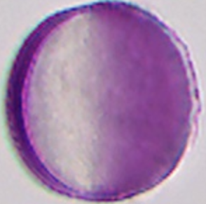
brassica_typbrassica_napus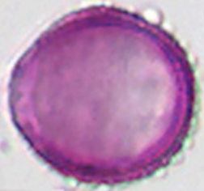
fraxinus_ornusbrassica_typ ↔ salix_typ M · moderatebrassica_typbrassica_napus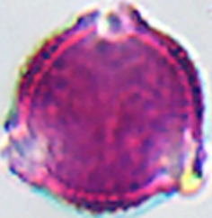
salix_typsalix_alba_var_tristisfraxinus_ornus ↔ salix_typ U · unratedfraxinus_ornussalix_typsalix_alba_var_tristisaesculus_hippocastanum ↔ melilotus_officinalis E · easy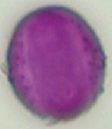
aesculus_hippocastanum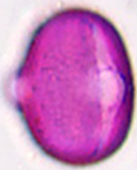
melilotus_officinalisaesculus_hippocastanum ↔ trifolium_repens E · easyaesculus_hippocastanum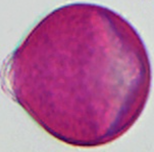
trifolium_repensmelilotus_officinalis ↔ trifolium_repens E · easymelilotus_officinalistrifolium_repensmalus_typ ↔ prunus_pirus_typ M · moderate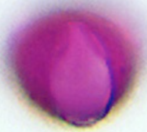
malus_typmalus_sylvestris
prunus_pirus_typprunus_aviumprunus_avium ↔ prunus_pirus_typ D · difficult
prunus_avium
prunus_pirus_typprunus_aviumprunus_laurocerasus ↔ prunus_pirus_typ E · easy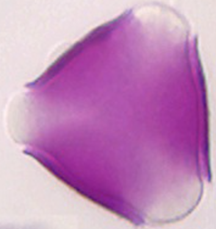
prunus_laurocerasus
prunus_pirus_typprunus_aviumbrassica_typ ↔ ligustrum_vulgare E · easybrassica_typbrassica_napus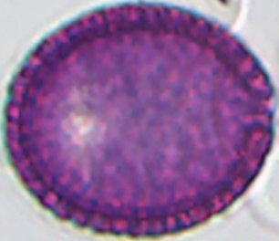
ligustrum_vulgarebrassica_typ ↔ raphanus_typ D · difficultbrassica_typbrassica_napus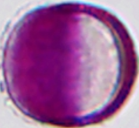
raphanus_typraphanus_raphanistrumbrassica_typ ↔ sinapis_typ M · moderatebrassica_typbrassica_napus
sinapis_typsinapis_arvensisligustrum_vulgare ↔ raphanus_typ E · easyligustrum_vulgareraphanus_typraphanus_raphanistrumligustrum_vulgare ↔ sinapis_typ E · easyligustrum_vulgare
sinapis_typsinapis_arvensisraphanus_typ ↔ sinapis_typ E · easyraphanus_typraphanus_raphanistrum
sinapis_typsinapis_arvensisprunus_padus ↔ prunus_serotina U · unrated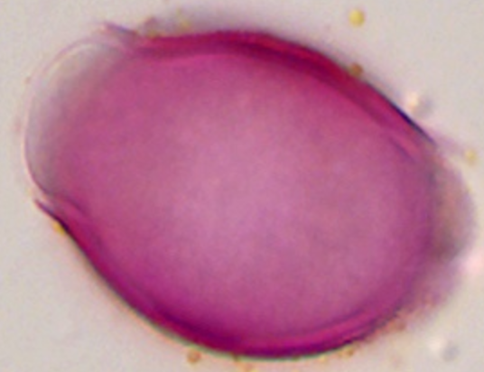
prunus_padusmissing image for prunus_serotina
prunus_padus ↔ rubus_typ M · moderateprunus_padus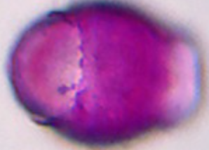
rubus_typrubus_fruticosusprunus_serotina ↔ rubus_typ U · unratedmissing image for prunus_serotina
rubus_typrubus_fruticosusanthriscus_typ ↔ vicia_typ M · moderate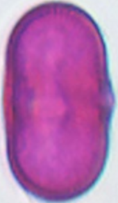
anthriscus_typanthriscus_sylvestris
vicia_typvicia_fabacentaurea_cyanus ↔ heracleum_typ E · easy
centaurea_cyanus
heracleum_typheracleum_sphondyliumcentaurea_cyanus ↔ trifolium_pratense E · easy
centaurea_cyanus
trifolium_pratensecentaurea_cyanus ↔ vicia_typ E · easy
centaurea_cyanus
vicia_typvicia_fabacentaurea_typ ↔ ranunculus_typ E · easy
centaurea_typcentaurea_montana
ranunculus_typranunculus_acrisranunculus_typ ↔ sinapis_typ M · moderate
ranunculus_typranunculus_acris
sinapis_typsinapis_arvensis